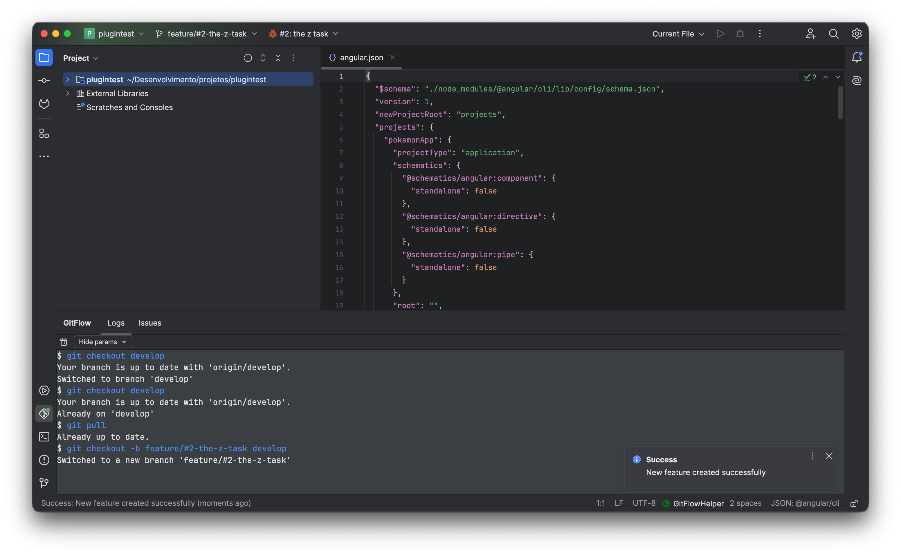
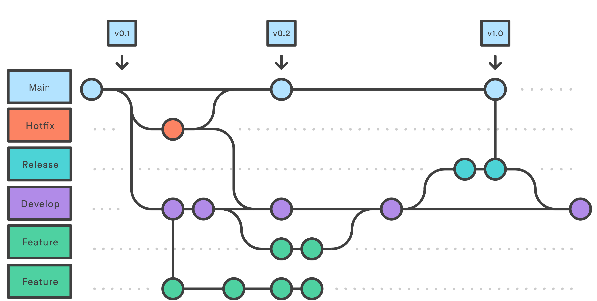
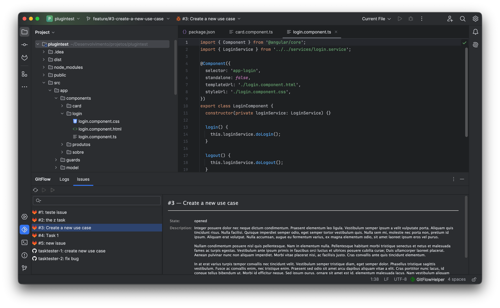

A unified command center docked at the bottom of your IDE. Monitor Git operations in real time, inspect assigned tasks, visualize branch topologies, and track CI/CD builds.
Never guess what Git commands are running under the hood. The Logs tab displays every single Git operation asynchronously executed by the plugin, complete with exact parameters, stdout, stderr, and exit codes.

See your active branch state at a glance. The Flow tab generates an interactive topological map of all local and remote branches in your Git repository.

Browse assigned tickets from Jira, GitHub, GitLab, or Redmine directly within the IDE. View ticket descriptions, recent comments, and start branches with one click.

Stay in your coding zone while tests and deployment jobs execute. The CI/CD tab connects to Jenkins pipelines to give you real-time build telemetry without browser tab switching.